Gradient Response Maps for Real-Time Detection of Texture-Less Objects
The real world is cluttered
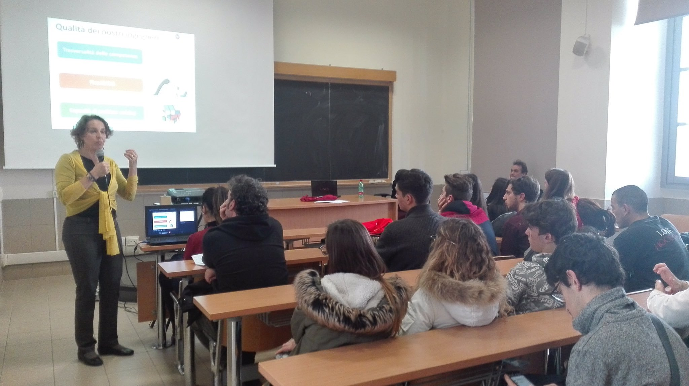 False positives, no space decomposition, no grid search
We achieve milliseconds speeds by:
Quantization
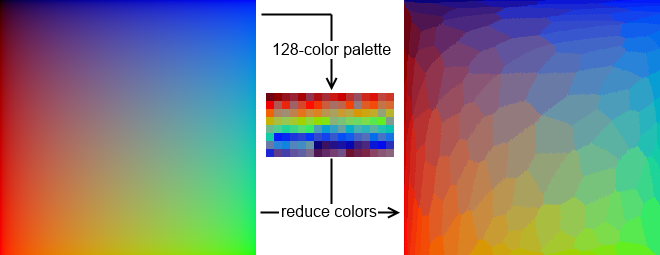
the Quantization operation creates a finite domain map 3x[0, 255] to [0, 8)
the Quantization operation creates a finite domain
a finite domain enables look up tables and pre-calculation!
Information spreading
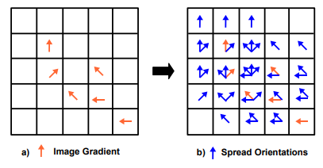
We bring three algorithms:
LINE-2D uses the image gradients only RGB
LINE-3D that uses the surface normals Depth
LINE-MOD, RGB+D
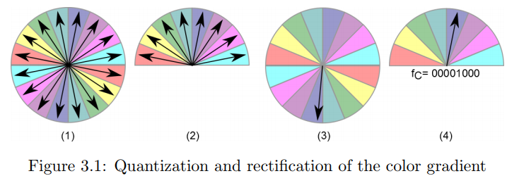
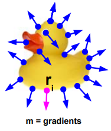
note: they appear in the contour
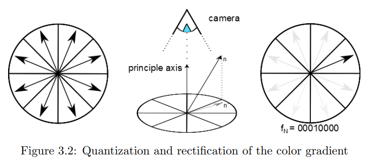
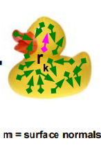
note: mostly they appear inside the object
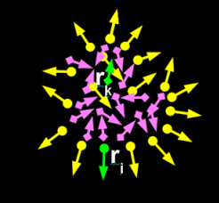
Linemod uses template matching:
Training phase:
Build a response map
1) Feature spreading
2) bit encoding of the orientations (SSE friendly)
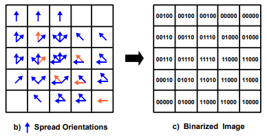Cache the similarity results
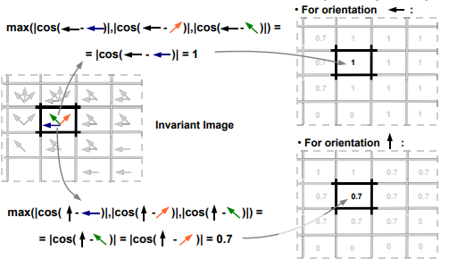store in a lookup table
response_strenght = lookup_table_UP[01110] Detection:
TP-TN
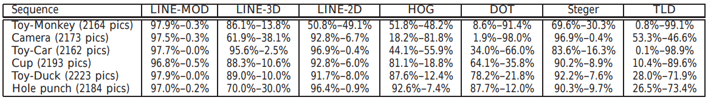Speed
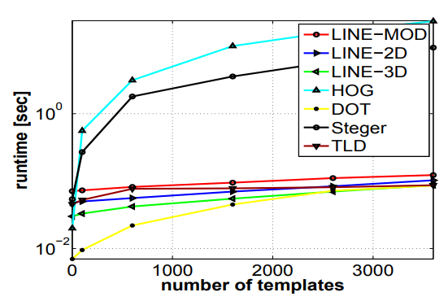